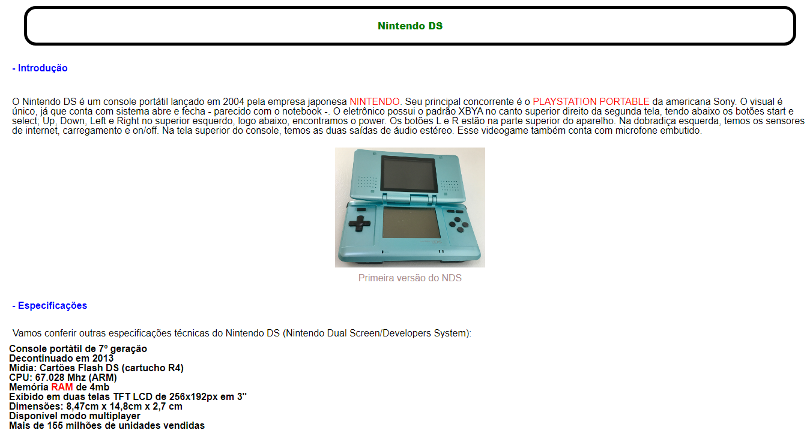
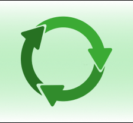

Experiências

Enciclopédia Mini-gameiros - Website
Este foi meu primeiro site que criei e se baseia em um artigo aos moldes da Wikipedia. Ele foi feito sem o uso de divs, que é o comando para criarmos contâineres e poder dividir os conteúdos presentes no site.

Primeiras Medidas (PRIM) - Aplicativo
Neste segundo projeto, eu coproduzi um aplicativo que visa conscientizar as pessoas sobre as ações criminosas que ocorrem na internet e como se precaver. Nele, estão presentes vídeos, tutoriais e ferramentas/medidas para auxiliar o usuário, caso seja vítima de algum dos golpes mais conhecidos do meio virtual. Informamos, por exemplo, números de autoridades e delegacias próximas. Acesse-o aqui

Mundo Sutentável pela Vida